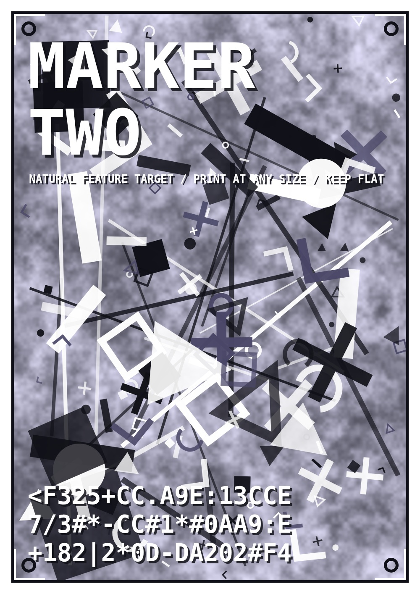

Print this on A4 or larger, or leave it on this screen. Unlike the Hiro square there is no border to keep in frame — the tracker works from the detail itself, so a partly covered poster still holds. Keep it flat and out of direct glare.
Back to Marker One